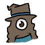

uhh names: anchovii/anchoviii/anchov3i. its, uh, anchovy but 'ii' instead of 'y'. very rarely 'iceko_28' for older accounts I still use.
other names
Necros: due to a combo of mojang services and The email just stopped existing. I was stuck with my brothers minecraft
username. It used to make me cringe a little bit but I've been using it for actual years now, and when the minecraft
migration finally forced me to get a new minecraft accout I kept the 'Necros' part.
[REAL NAME]: Self explanatory.
Luce: ever make an oc and then people start calling you by the name of your oc and then you go "hey wait a second"
relevant to interacting with me
I don't have notification sounds on for anything, so you can ping/@/DM me for whatever. You will have to be
a patience fan for any responses, though. I check discord the most, but I poke at my social medias occasionally.
Active lurker/backreader. I don't know small talk! Aah! I mostly just listen into conversations and say something when theres an opportunity where I have something I want to say.
It's that fear of being annoying or overbearing, you see. Or just plain not having anything to say.
Gender
She/any --→ . I can't know how I feel about a pronoun before I get called by it, so use that /any. Figure out my pronouns for me.
Use one pronoun. Use your own pronouns. Use eight different pronouns like you're a jester juggling balls. Throw out the pronouns and just vaguely refer to me. Capital w Whatever.